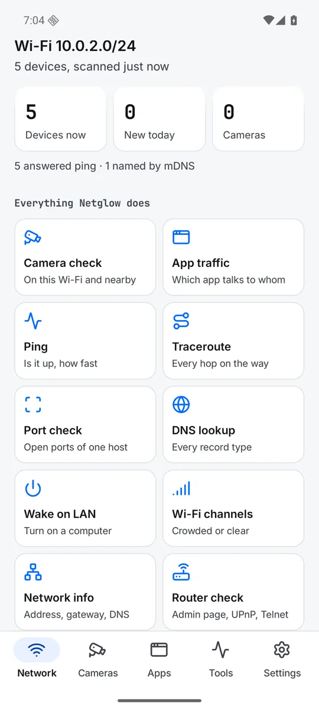
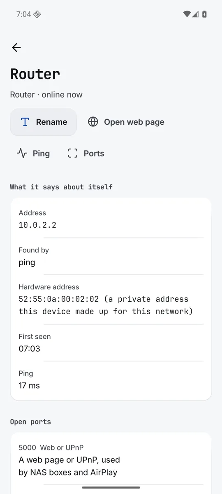
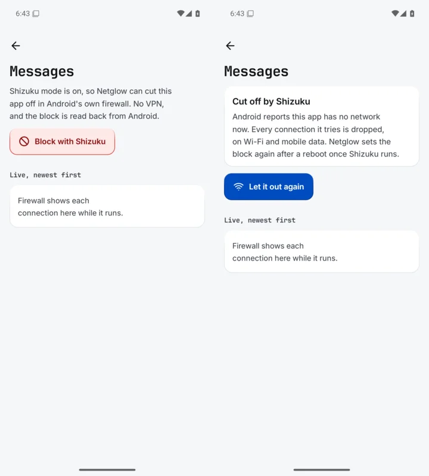
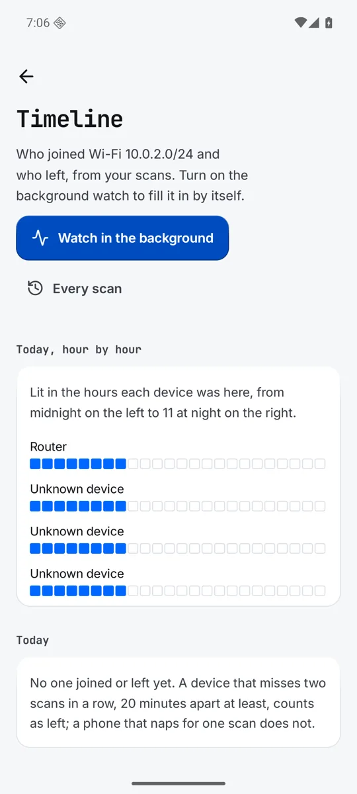
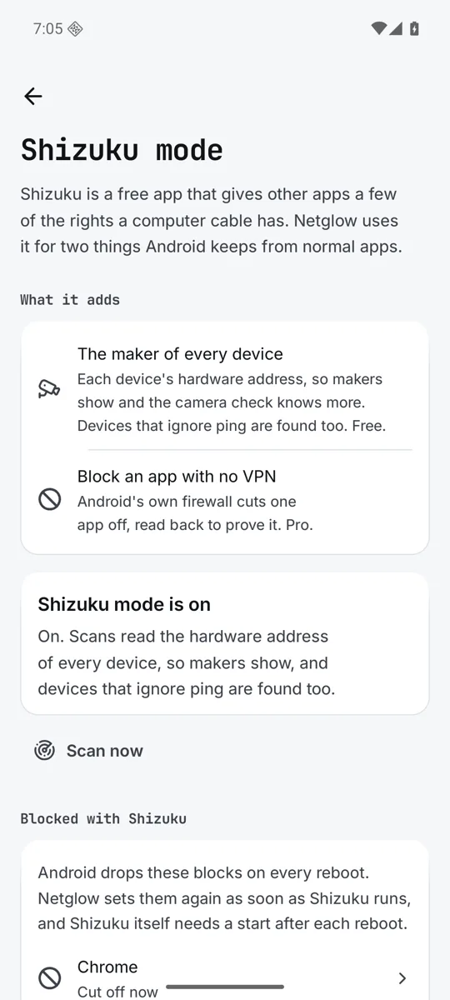

The guide
Everything Netglow does, screen by screen. Words in code style are what you see in the app.
Install
Get Netglow on Google Play. It runs on Android 10 or newer. Scans are free and unlimited, with no account and no ads. Words in code style are what you see in the app.
The bottom bar has five places: Network, Cameras, Apps, Tools and Settings.
The Network screen
This is home. At the top is the name of your Wi-Fi and a Scan key. While a scan runs the key becomes Stop.
Your first scan
- Join the Wi-Fi you want to look at.
- Tap
Scan. Netglow asks each device for its name by ping, mDNS, UPnP, NetBIOS and ONVIF, all at once, in about 15 seconds. Nothing is sent until you tap it, and nothing leaves your Wi-Fi. - Read the three tiles:
Devices now,New todayandCameras. Under them a line says how the devices were found, like "5 answered ping".
The first scan of a network is the starting point. Only devices that join after it count as new.

Everything Netglow does
Under the tiles is a grid with one tap to every feature: Camera check, App traffic, Ping, Traceroute, Port check, DNS lookup, Wake on LAN, Wi-Fi channels, Network info, Router check, Names file, Timeline and Shizuku mode.
All devices
The list starts with this phone and the router. Tap the sort row to sort By address, By name, By maker or By last seen. See all opens the full list, with Online now and Away. Netglow keeps every device it ever saw.
A device is missing
Tap Why a device may be missing. Phones and tablets sleep with the screen off, so wake one and scan again. Guest networks and most hotel Wi-Fi keep devices apart, so only the router answers. Mesh systems and extenders can hide devices for a moment. Devices on a cable behind another router are on another network.
The Wi-Fi name
Android shows the Wi-Fi name only to apps with location. Netglow asks Show the Wi-Fi name? and uses location for the name and nearby Wi-Fi only. If you say no, scans still work and the network is shown by its address range.
A device
Tap any device in the list.

- Rename
- Give it your own name. Leave it empty to give back its own name.
- Open web page
- Shown when the device has a web page port open.
- Ping, Ports
- Start the Ping or Port check tool on this device.
- What it says about itself
- Address, name on the network, maker and model, found by, hardware address and first seen. Since Android 10 apps cannot read the hardware address of other devices. Shizuku mode shows it. A private address is one the device made up for this network.
- Open ports
- The ports that answered, with a plain note on what each is used for.
- Online, last 14 days
- On which days it was seen.
- Names
- Every rename you made, with the time. All of it is saved in devices.json.
- Comes and goes
- When it joined and left, from the timeline.
- Wake on LAN
- Turns on a computer. It needs the hardware address, typed once.
- Known device
- Switch it on and there is no alert when it comes back.
- Remove it from my Wi-Fi
- A phone cannot push another device off a Wi-Fi, only the router can. Netglow says how: change the Wi-Fi password in the router, or block the device in the router's list of connected devices.
- Forget this device
- Its names and history are removed from Netglow and from the names file. If it answers a scan again it comes back as new.
A device that joined after the first scan shows New on this network with It is mine and Not mine?.
Names and the names file
Netglow knows a device again by what it says about itself, even when its address changes. Your rename stays with it.
Every device, every name it announced (UPnP, mDNS, NetBIOS) and every rename you made, with the time, is written to a plain text file called devices.json. It is saved after each scan and each rename. It is free, not part of Pro.
Where it lives
Go to Settings, Device names file. Under Where it is saved, tap Folder and pick a folder once. Because the folder is yours, the file stays when Netglow is removed. Until you pick one, the file is kept inside Netglow only. Keep it inside Netglow only undoes the choice.
Share, load, forget
- Share file
- Sends the file with another app.
- Load a file
- Reads a names file back. Names you gave win, and nothing is lost.
- Forget
- Removes one network, its devices, their names and history, from Netglow and from the file.
Any text editor opens the file. The page also counts the networks, devices and renames inside.
Camera check
Open Cameras in the bottom bar and tap Check again. The check is one check among others. It is good for a holiday rental or a hotel Wi-Fi, but it never promises to find every camera.
What it looks at
- Devices that answer as a camera (ONVIF, HomeKit camera, UPnP camera).
- Video ports: RTSP 554 and 8554, RTMP 1935, and the ports of Hikvision, Dahua, Xiongmai and Tuya.
- Camera makers in what a device says about itself.
- Nearby Wi-Fi made by a camera maker or named like a camera (IPC, HDcam, CAM). This needs location, and the page offers
Check nearby Wi-Fi too.
Each find says why it was flagged. Camera: means a sure sign, Maybe: means a weaker one.
What it cannot see
- Cameras that only record to a card, or use mobile data.
- Cameras on a cable or on another network.
- Anything when the Wi-Fi keeps guests apart, as many hotels do.
So a clean result is good news, not a promise. Look at smoke alarms, clocks and chargers that face the bed or shower too.
Before you trust the check, run it once with a camera of your own on the Wi-Fi. Netglow should list it, with why. Then you know what a find looks like. The app suggests this on first use.
Apps
Open Apps to see what the apps on this phone are doing on the network. Netglow runs no VPN of its own. It works with Firewall, our free firewall app, because Android lets only one app run a firewall at a time.
- Get Firewall on Play
- Shown until Firewall is installed.
- Live from Firewall
- Firewall is running. Blocks hold, and each app's connections show live.
- Firewall is off
- Installed but not running.
Open Firewalland turn it on, or blocks do not hold. - Another VPN may be on
- Android runs one VPN at a time. If the VPN is not Firewall, Firewall is off.
- Apps online in the last hour
- Apps that connected, from Firewall's log. Tap one for its page.
- Data used today
- How much each app sent and received over Wi-Fi and mobile data, from Android's own counters. Netglow sees only the amounts. Tap
Allow usage accessand turn Netglow on in Android settings.
An app's page
The page lists its connections, newest first. Red ones were stopped and blue ones went out.
- Block in Firewall
- Blocks the app in Firewall. If Firewall is missing the button says
Get Firewall to block it. - Block with Shizuku
- Pro, Android 14 and up, with Shizuku mode on. See Shizuku mode. The app page then says
Cut off by Shizuku. - Let it out again
- Lifts the Shizuku block.

Tools
Open Tools, or tap a tile in the grid on the Network screen. Each tool runs on this phone. Type a name or an address, or start one from a device's page.
- Ping
- Is it up, and how fast it answers. Under 10 ms is normal on your own Wi-Fi.
- Traceroute
- Every router on the way to a server, and where time is lost.
- Port check
- Which services a device offers: open, closed or no reply. Free checks the 40 most common ports. Pro checks up to 1000, or a range you type, like 192.168.1.1 22, 8000-8100.
- DNS lookup
- What a name points to: A, AAAA, MX, TXT, CNAME and more.
- Wake on LAN
- Turns on a computer that is set to wake from the network. Type its hardware address and tap Send.
- Wi-Fi channels
- Which channels nearby Wi-Fi use, so you can pick a clear one. It needs location. Channels are set in the router.
- Network info
- This phone's address, the router, DNS, band and signal.
- Router check
- Its settings page, Telnet, UPnP and model, looked at from inside. Nothing is changed.
Timeline and history
Open the Timeline tile on the Network screen, or Settings, Watch and history, Timeline.

It shows who joined your Wi-Fi and who left. Today, hour by hour lights the hours each device was here, from midnight on the left to 11 at night on the right. A device that misses two scans in a row, 20 minutes apart at least, counts as left. A leave shows the last time the device answered.
- Free
- The timeline fills from your own scans, for today. Scan history is kept for 30 days. Names and renames are never removed.
- Pro
Background watchchecks in the background, only while the phone is on Wi-Fi, every 15 minutes or as often as you set, and gives a note when a device never seen before joins. Every scan and every day is kept for good. Android may wait longer between checks while the phone sleeps.- Every scan
- A list of all scans, and the days each device was online.
Shizuku mode
Shizuku is a free app that gives other apps a few of the rights a computer cable has. Netglow uses it for two things Android keeps from normal apps. Open it from the Shizuku mode tile, or Settings, Shizuku mode.

- The maker of every device
- Free. Netglow reads each device's hardware address, so makers show, the camera check knows more, and devices that ignore ping are found too.
- Block an app with no VPN
- Pro, Android 14 and up. Android's own firewall cuts one app off, on Wi-Fi and mobile data, and Netglow reads it back to prove it.
Turn it on
- Tap
Get Shizukuand install it. - Tap
Open Shizukuand start it. Shizuku starts with wireless debugging, no computer needed. - Come back and tap
Allow Netglow. The page saysShizuku mode is on. TapScan nowto see makers.
Android stops Shizuku on every reboot, and drops the blocks too. Start Shizuku again after a reboot and Netglow sets the blocks again. The list Blocked with Shizuku shows each app as Cut off now, Not held now, open Shizuku or Waits for Shizuku. Everything stays on your phone.
Settings
- Look
- Theme:
Follow the phone,Light,DarkorBlack. - Scanning
How hard to scan: Quick (about 8 seconds), Normal (about 15) or Thorough (about 30), which waits longer for slow devices and sleepy phones. AlsoPorts to checkandWi-Fi name, withShow the Wi-Fi name.- Watch and history
Background watch(Pro):Watch in the background,Note for new devicesandHow often(15 minutes up to 6 hours). ThenHistory,Timeline,Every scanandExport devices(Pro), as CSV or JSON.- Shizuku mode
Makers and app blocks.- Device names file
- The devices.json page described above.
- Privacy
- Each permission, and why.
- Pro
See what Pro adds, the unlock andRestore purchase.- Help and feedback
- This user guide, report a bug, and
Why a device may be missing.
Netglow Pro
Pro is optional, and never needed to scan. It is a one time payment on Google Play, with no subscription and no account. Every Pro extra that comes later is included. Google Play handles only the payment, and your device list never leaves the phone.
- Background watch: a timeline of who joined and left, and a note when something new joins.
- History for good: every scan and every day a device was online, not just 30 days.
- Several networks: home, office and family, each with its own devices, to browse while you are away.
- Deep port check: up to 1000 ports, or a range you type.
- Block with Shizuku: cut one app off with no VPN, on Android 14 and up.
- Export: your devices as CSV or JSON.
- Widget: devices online and new ones on your home screen, with a Scan key.
To buy it, open Settings, See what Pro adds, then Get Pro. If it does not unlock, tap Restore purchase on the same page, with the Google account that paid.
Free stays free: scans, names, the names file, the camera check and every tool.
The widget
The Netglow widget shows the Wi-Fi name, how many devices are online and how many are new, and when the last scan was, with a Scan key. It is part of Pro. Without Pro it says "The widget is part of Pro". Add it the way you add any widget: hold an empty spot on your home screen, tap Widgets, and pick Netglow.
Permissions and privacy
Netglow has no server of its own. What it finds stays on your phone. It only asks devices to announce themselves. It never tries passwords, never looks for weak spots and never reads other devices' traffic. Use it on networks you own or may test.
- Network access, Network and Wi-Fi state
- To scan the Wi-Fi you are on, and to run the tools on the addresses you give.
- Multicast
- To hear the names devices announce (mDNS, UPnP, WS-Discovery).
- Location
- Asked only when you open the Wi-Fi name or nearby Wi-Fi, after an explanation. Android requires it for the Wi-Fi name and for the Wi-Fi channels and camera hotspots around you. Your location is never read or kept. Everything else works if you say no.
- Nearby devices on your Wi-Fi
- Newer Android asks before an app talks to devices on your own network.
- Notifications
- For the note that a new device joined, if you turn it on.
- Run at startup
- So Background watch (Pro) starts again after a restart.
- Usage access
- Optional, on the Apps page only, for data used per app.
- Shizuku
- Optional, only if you install Shizuku and allow Netglow.
Never asked for: contacts, messages, photos, the microphone, the camera and your accounts. The full policy is at netglow.zanoski.com/privacy.